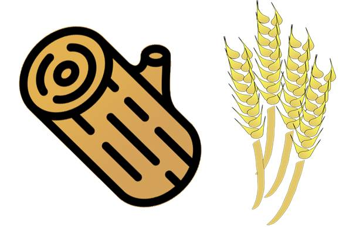

해상 무역거래조건
인코텀즈란?
FAS
FOB
CFR
CIF
FOB, CFR, CIF 비교
FAS(free alongside ship) : 선측인도조건
매도인이 물품을 수출 통관하여 선적항에서 본선의 선측(부두 혹은 바지선)에 인도함으로써 모든 인도의무 완료.
주로 본선의 선적에 비용이 많이 들고 부피가 큰 대량의 살화물 거래시 이용.
살화물: 포장을 하지 않은 상태로 운송하는 화물
 통나무, 곡식 등등